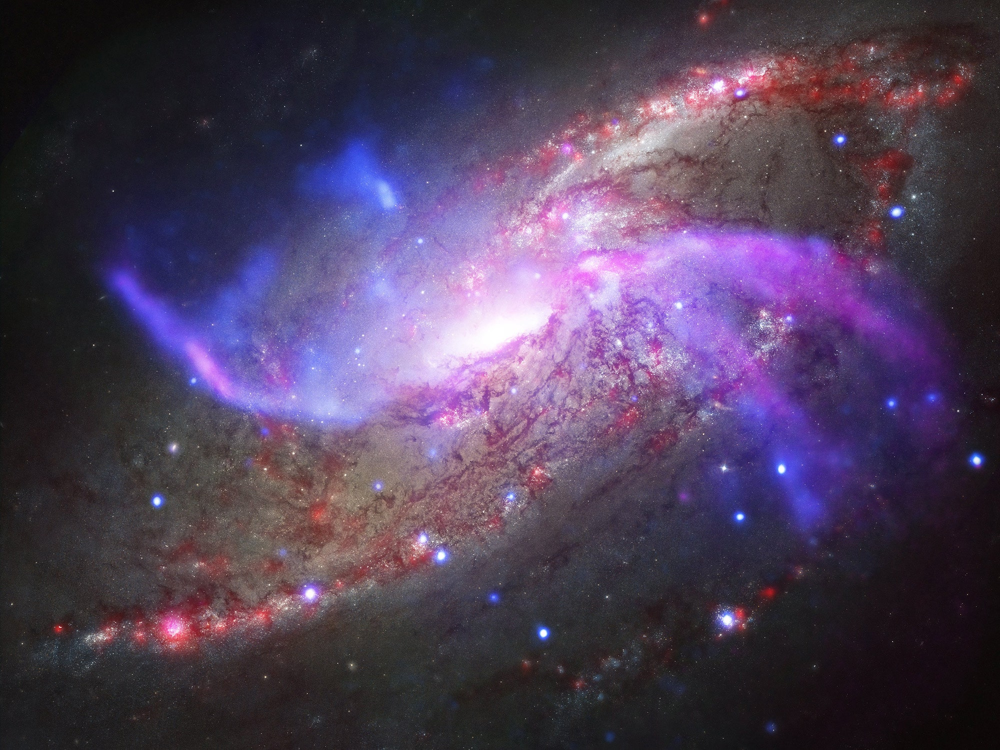
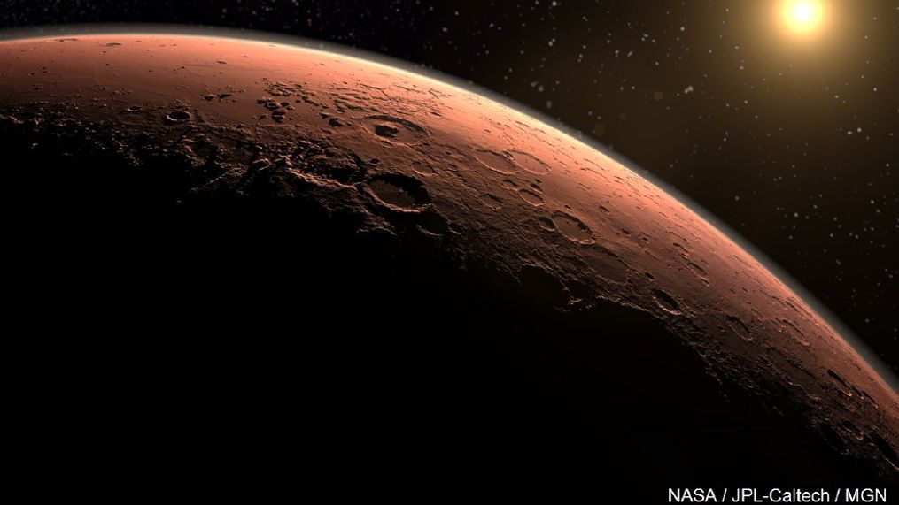
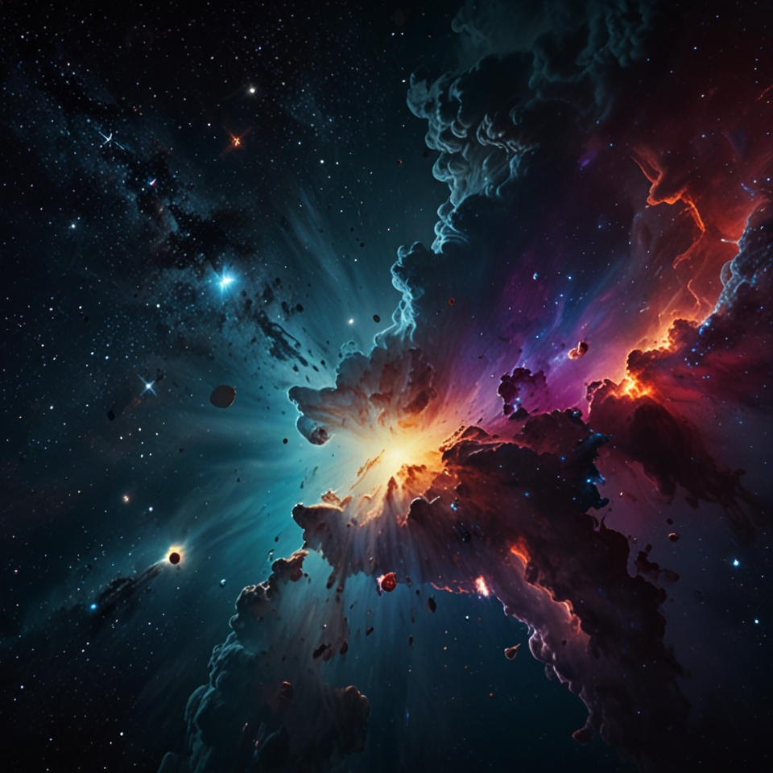
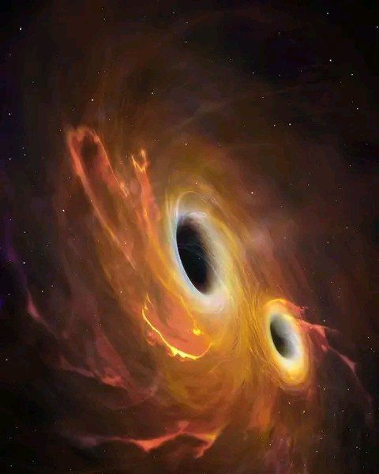
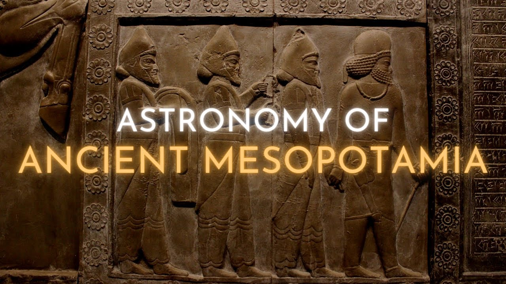
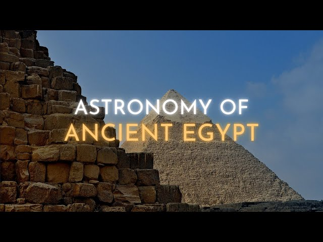
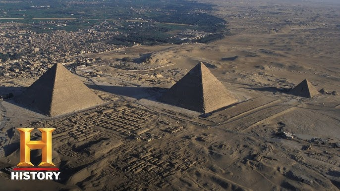
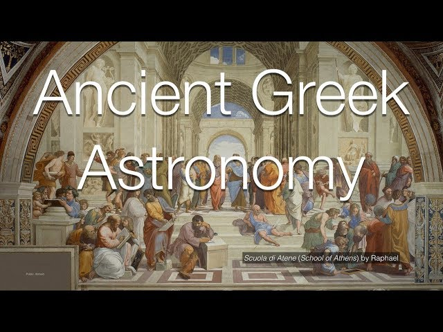

Ever wondered what's beyond the blue sky? Then you've come to the right spot where we are committed in creating awareness about space and astronomy!
Here is the hub where we start our own space exploration. Stay curious!

## Basics of Astronomy
Hey everyone, space fans! So, before we get lost in all the cool details about astronomy, it’s probably a good idea to know what we're actually talking about, right? I mean, what even is "Astronomy" anyway???
Well, put simply, astronomy is like our way of studying everything that’s out there in space - all those stars, planets, galaxies, the whole shebang. It's about looking beyond our little blue planet and trying to figure out what's happening up there.
Now, astronomy is like a tree with a bunch of branches, all connected but focusing on slightly different stuff. Here are some of the main branches:
Observational Astronomy...
This is basically like being a space detective, using telescopes and other fancy instruments to gather some info from space. It’s like looking at a 'star show' in the night sky, but with much better equipment!
Theoretical Astronomy...: This is where the math wizards come in. They use formulas and computer simulations to try to make sense of all the crazy stuff happening in space – like figuring out how planets move around each other using complex models.
Astrophysics...: If you ever wondered why a star shines so brightly or why galaxies are the shape that they are, that's astrophysics! It’s basically the phisics of astronomy!
Cosmology...: This is about the biggest picture of all - trying to understand how the universe began, how it’s changed over time, and maybe even where it’s all headed in the end. Basically, it's trying to unravel the whole story of the universe.
So, what kind of stuff does astronomy actually study? Well, all kinds of things! Here are just a few:
Stars: Massive, glowing balls of hot gas. Our Sun is a pretty regular example.
Planets:Those large bodies that go around stars, like Earth and Mars, who are circling our own Sun.

Moons:The natural satellites that circle around planets, just like our Moon does around Earth.
Galaxies:Enormous collections of stars, gas, dust, and this mysterious thing called dark matter. Our own galaxy, the Milky Way, is a pretty amazing example.
Nebulae:Huge clouds of gas and dust in space. These are actually where stars are often born, so they’re like stellar nurseries!

Black Holes:These are just super weird areas in space where gravity is so strong that not even light can escape them. Spooky!

Now, when we're talking about space, things get really big, so we need special units to measure distances. Here are a couple that astronomers use a lot:
Astronomical Unit (AU)This is roughly the average distance from the Earth to the Sun (about 93 million miles or 150 million kilometers). It’s kind of our "local" unit.
Light-Year:This is the distance that light travels in one year – which is about 5.88 trillion miles or 9.46 trillion kilometers! I know, it’s totally mind-blowing, right?
And how do we see all this crazy stuff in space? With telescopes, of course! They are like giant eyes that let us see distant objects. They can be optical, using visible light, or radio, using radio waves.
Okay, let’s get into some mind-blowing facts about space!
I hope your brain is ready for these, because they’re pretty crazy!
The Universe is HUGE: We can only see a small part of it, and that part is about 93 billion light-years across. And inside that, there are around 100 billion galaxies! Can you even imagine that?
It's Ancient: The universe is about 13.8 billion years old! Scientists figured that out by studying something called cosmic microwave background radiation.
Exoplanets are Everywhere: We’ve discovered thousands of planets orbiting other stars (we call those exoplanets), and some might even have the right conditions to support life! And, believe it or not, there are BILLIONS of planets in our galaxy alone! Think about that for a minute...
Stay tuned for more updates!
The Early History of Astronomy: A Journey Through Time
The history of astronomy is a fascinating narrative that stretches back thousands of years, intertwining the evolution of human thought with our quest to understand the cosmos. From the early observations of celestial bodies to the sophisticated models developed by ancient civilizations, the journey of astronomy reflects humanity's enduring curiosity and ingenuity. Let's take a short note about the early history of astronomy, focusing on key civilizations that contributed to its development, their methodologies, and the profound implications of their discoveries.
Mesopotamia: The Cradle of Astronomy

The roots of astronomy can be traced back to ancient Mesopotamia, often referred to as the cradle of civilization. Around 3000 BCE, the Babylonians began systematically observing celestial phenomena. Their keen observations were motivated by practical needs such as agriculture, navigation, and religious rituals. They developed a lunar calendar based on the phases of the moon, which was essential for agricultural planning and religious festivals.
The Babylonians meticulously recorded the movements of planets and stars, creating one of the earliest star catalogs. They identified five planets—Mercury, Venus, Mars, Jupiter, and Saturn—and noted their positions in relation to fixed stars. Their mathematical prowess allowed them to predict celestial events such as eclipses with remarkable accuracy. The use of a base-60 numeral system laid the groundwork for later developments in timekeeping and angular measurement, which are still relevant in modern astronomy.
Ancient Egypt Celestial Alignments and Agricultural Cycles

In ancient Egypt, astronomy was closely linked to religion and agriculture. The Egyptians observed the night sky to align their monumental structures, such as temples and pyramids, with celestial bodies. The most notable example is the Great Pyramid of Giza, which is aligned with incredible precision to true north.
The heliacal rising of Sirius, which occurred just before the annual flooding of the Nile River, was particularly significant for the Egyptians. This astronomical event heralded a new agricultural season, emphasizing the interconnectedness of celestial phenomena and daily life. Egyptian astronomers developed a calendar that consisted of 365 days, divided into twelve months, with an additional five days added at the end of the year. This early understanding of timekeeping would influence future civilizations.

Ancient Greece: The Birth of Theoretical Astronomy

The ancient Greeks made monumental contributions to astronomy that laid the foundations for Western scientific thought. Beginning around 600 BCE, philosophers such as Pythagoras and Aristotle sought to understand the cosmos through reason and observation rather than merely recording celestial events. Pythagoras is credited with proposing that celestial bodies were spherical and moved in circular orbits, a revolutionary idea at the time.
Aristotle expanded upon these concepts, advocating for a geocentric model where Earth was at the center of the universe. His work influenced astronomical thought for centuries. However, it was Aristarchus of Samos who dared to propose a heliocentric model, suggesting that the Sun, not Earth, was at the center of the universe. Although his ideas were not widely accepted during his lifetime, they would later resurface in the Renaissance.
The most influential figure in ancient Greek astronomy was Claudius Ptolemy, whose work "Almagest" synthesized earlier knowledge and presented a comprehensive geocentric model. Ptolemy's system explained the apparent retrograde motion of planets through complex epicycles and dominated astronomical thought for over a millennium.
Fantastic! right? And this is just the beginning. There is a lot more to discover! So stay tuned and curious!
OUR HOME SYSTEM
Alright, so let's talk about our solar system. It's basically our neighborhood in space, and it's pretty cool when you think about it.
The Sun: The Star of the Show (kind of...)
First up, we got the Sun. It's our star, and it's like a giant, hot ball of gas. Seriously, it's HUGE, like way bigger than the Earth. It's always making energy through something called nuclear fusion (don't worry about what that is). All that energy is what keeps us warm and alive on Earth.
The Sun has layers, kind of like a cake, with a super-hot center, and then it has a surface that's still really, really hot. And it's not just sitting there all quiet, sometimes it shoots out energy or gets dark spots. The sun is a really busy star!
The Planets: Our Space Buddies
Then, we've got the planets, all moving around the Sun. We can break them into two groups:
--- The Rocky Ones (Closer to the Sun):
• Mercury: It's super close to the Sun, so it gets crazy hot, then crazy cold. It's a rock with lots of holes (craters).
• Venus: It's about the same size as Earth, but it's super hot because it's got too much air trapping heat, and it also spins backward!
• Earth: That's us! The only place we know of where there’s life. We have air, water, and lots of cool stuff.
• Mars: It's the red one, and it might have had water in the past, but it's kinda dry now.
--- The Gassy Ones (Farther Out):
• Jupiter: It’s HUGE, the biggest planet. It’s made of gas and has a giant storm called the Great Red Spot.
• Saturn: It's got awesome rings made of icy stuff, and many, many moons.
• Uranus: This one is tilted and rotates on its side, it's an ice giant.
• Neptune: It’s the farthest away planet, also an ice giant with crazy winds and a big dark spot like Jupiter’s.
--- Other Stuff: Small but Cool
There are also dwarf planets, which are kinda like planets but a bit smaller, and also the moons that go around the planets. Finally, we got asteroid belts, comets, and space rocks that we can sometimes see in the sky.
How It All Works
Everything in our solar system goes around the Sun because of gravity, a type of invisible force that keeps everything in place. Scientists think it all started from a giant cloud of gas a long, long time ago. And sometimes, things can move around and change, it’s all pretty dynamic.
We're still exploring our solar system with spaceships and robots to see what else is out there. It’s amazing to think that there's so much we still have to learn!
The Main Idea
So, that's the solar system in a nutshell. It's a mix of planets, stars, and other space rocks, all spinning around our Sun. Pretty cool, right?
This web is in the very beggining; and it will continue venturing forward to the edge of the universe. So, joining our endless exploration will be a great spot. See you on another update!
 Alright, so let's talk about our solar system. It's basically our neighborhood in space, and it's pretty cool when you think about it.
Alright, so let's talk about our solar system. It's basically our neighborhood in space, and it's pretty cool when you think about it.